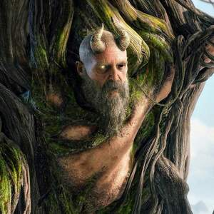

| Kratos |
O protagonista, ex-deus grego da guerra. |
Pai e guerreiro em busca de redenção. |
|
| Atreus |
Filho de Kratos, parte fundamental da história. |
Acompanha Kratos e contribui com habilidades. |
|
| Mimir |
Cabeça falante que fornece informações e conhecimento. |
Guia e aliado de Kratos, fazendo sua primeira aparição em uma discussão com Baldur |
 |
| Baldur |
O antagonista principal, filho de Odin. |
Busca vingança contra Kratos. |
|
| Freya |
A ex-deusa da natureza, mãe de Baldur. |
Desempenha um papel central na narrativa. |
|
| Brok e Sindri |
Anões ferreiros e irmãos rivais. |
Forjam e melhoram equipamentos. |
|